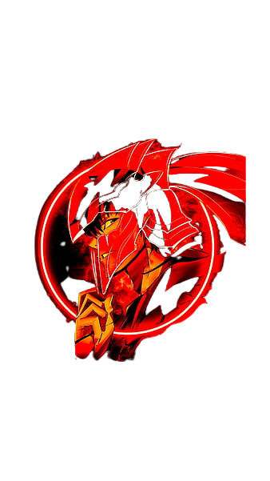

Solo Leveling acompanha a história de Sung Jin-Woo (Sung sendo o sobrenome da família e Jing-Woo o personagem), um caçador de monstros. No universo de Solo Leveling, anos atrás surgiram portais que conectavam o mundo a Dungeons repleta de monstros.
X